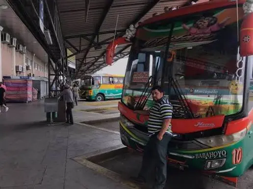

Unidad número 10 de la Cooperativa de Transportes CITAM rotulada para Babahoyo.

Zona de andenes donde se realiza el embarque de pasajeros en la terminal.
Transcripción del aviso: Estimados pasajeros de la Cooperativa CITAM, les recordamos llegar con
anticipación a la boletería, verificar el andén asignado y consultar las frecuencias diarias de Babahoyo hacia
Caracol y La Unión.